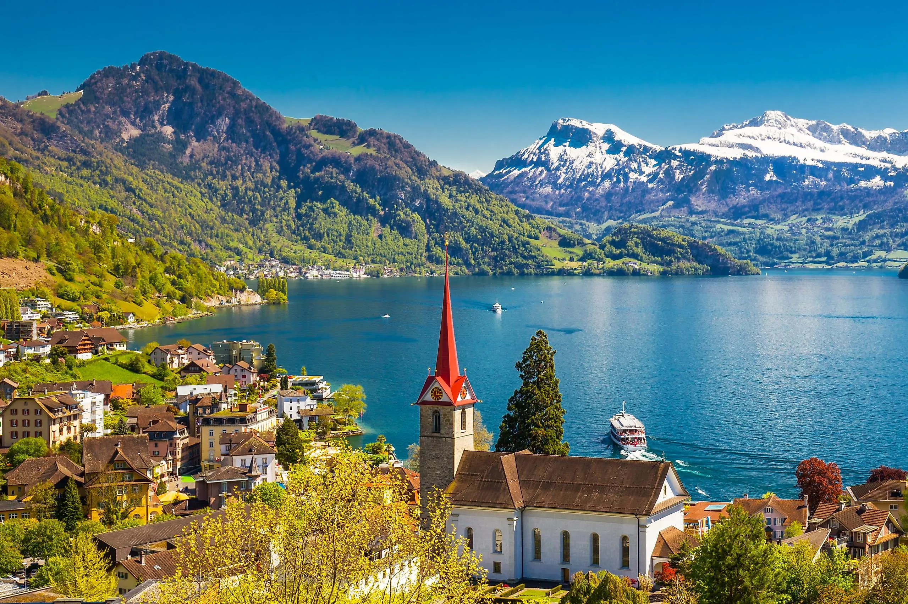
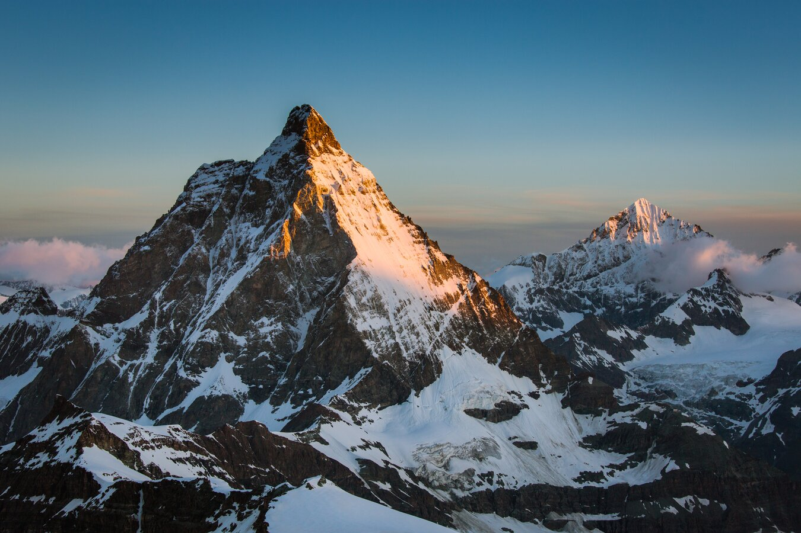

SWITZERLAND



LANDSCAPES & MODERN FABRIC
Switzerland, officially the Swiss Confederation, is a small but spectacular landlocked country in the heart of Europe. Famous for its majestic Alps, pristine lakes, and picture-postcard villages, it blends four national languages and centuries of neutrality into a stable and prosperous nation. Whether you are drawn by the Matterhorn mountain or the sound of cowbells across the valley, Switzerland offers mellow peace that feels almost nurtured by nature itself.
From the high-altitude glaciers of the Jungfrau region to the palm trees of Lugano, Switzerlands geography is a study in contrasts. The Swiss Alps cover about 60% of the countrys surface, yet within a few hours you can descend to the rolling vineyards of Geneva or the serene lakeshores of Lucerne. The country is also home to international cities like Zurich and Geneva, where banking, diplomacy, and culture thrive against a backdrop of hills and water.
Swiss unity is built on diversity. German, French, Italian, and Romansh are all official languages, and youll notice the cultural shift when you travel from Bern to Lausanne or across the San Bernardino pass. Despite these differences, or perhaps because of them , the Swiss share a fierce pride in their direct democracy, punctual railways, and artisanal heritage.
Beyond the picture-book views, Switzerland is also a global innovation leader. It consistently ranks among the most competitive economies, thanks to industries (watches, pharma, machinery) and a deeply rooted culture of quality. Yet it remains a place of quietude, you can ride a postal bus over a high pass, and hear nothing but wind and cowbells.

Panoramic view of the Swiss Alps
CULTURAL IDENTITY
- Ride the Glacier Express: an 8-hour train journey from Zermatt to St. Moritz across 291 bridges.
- Stand on the Jungfraujoch: Europe's highest railway station, surrounded by eternal ice.
- Taste real fondue with bread, ideally in a chalet.
- Walk across the Chapel Bridge (Kapellbrücke) in Lucerne, the oldest wooden covered bridge in Europe.
- Watch the sunset over the Matterhorn from Gornergrat or the village of Zermatt.
SWISS CITIES
- Zürich approx. 430,000 inhabitants (financial hub, vibrant arts)
- Genève (Geneva) around 205,000 (UN city, jet deau)
- Basel about 178,000 (pharma capital, Rhine port, museums)